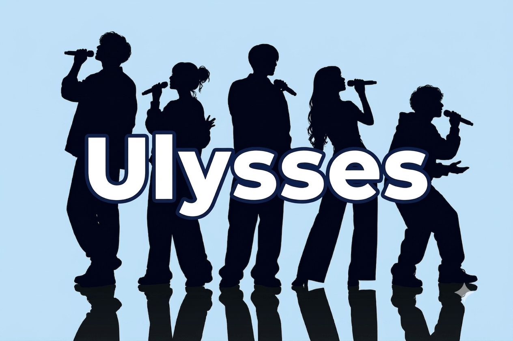

Where voices become music
東京・横浜を中心に活動しているアカペラサークル「Ulysses（ユリシーズ）」です！
Ulyssesでは主に5人ほどのメンバーを一つのグループとして活動しており、4ヶ月に1度（年3回）、各グループが集まってミニライブ（発表会）を行っています。まったりと、でも素敵なハーモニーを追求して楽しんでいます♪
| 活動地域 | 東京都、神奈川県、埼玉県、千葉県 |
| 活動方針 | まったり（エンジョイ志向）～ステージ志向まで様々 |
| 最終更新日: 2026年6月20日 | |
Welcome to the a cappella circle "Ulysses," operating mainly in Tokyo and Yokohama.
Ulysses mainly operates in fixed band formats (3-4 people), and once every three months (4 times a year), each band gathers for a mini live performance. We enjoy pursuing beautiful harmonies in a relaxed atmosphere.
| Area | Tokyo, Kanagawa, Chiba |
| Style | Relaxed / Enjoyment-focused |